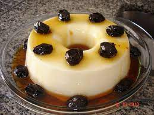

Voltar para o índice
Manjar de coco

Ingredientes
- 1 l de leite
- 200 ml de leite de coco
- 100 g de coco ralado
- 6 colheres (sopa) de amido de milho
- 8 colheres (sopa) de açúcar
- 1 lata de ameixa em calda
Modo de preparo
-
Misturar o leite, o leite de coco, o
coco ralado, o amido de
milho e o açúcar.
- Levar ao fogo, mexendo sempre até engrossar.
- Despejar em fôrma untada e levar para gelar por pelo menos 3 horas.
- Desenformar e servir com ameixa em calda.